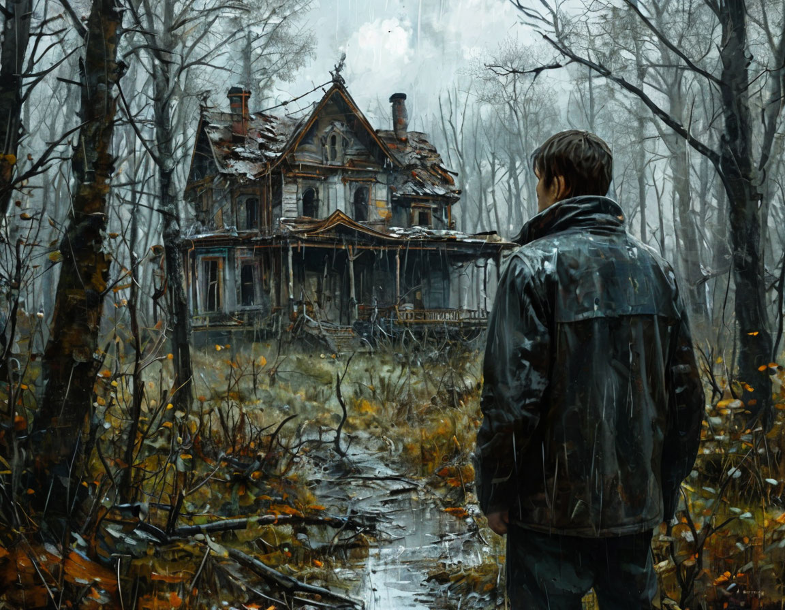

Дождь хлестал по лицу Алексея, пробираясь за воротником тонкой куртки. Он заблудился. Лес, казалось, сгущался вокруг него, превращаясь в непроходимую стену из мокрых стволов и колючих кустов. Внезапно, сквозь пелену дождя, он увидел силуэт дома. Надежда вспыхнула в груди. Дом выглядел старым, заброшенным, с покосившимся крыльцом и разбитыми окнами, но это был шанс укрыться от непогоды и, возможно, найти дорогу домой.